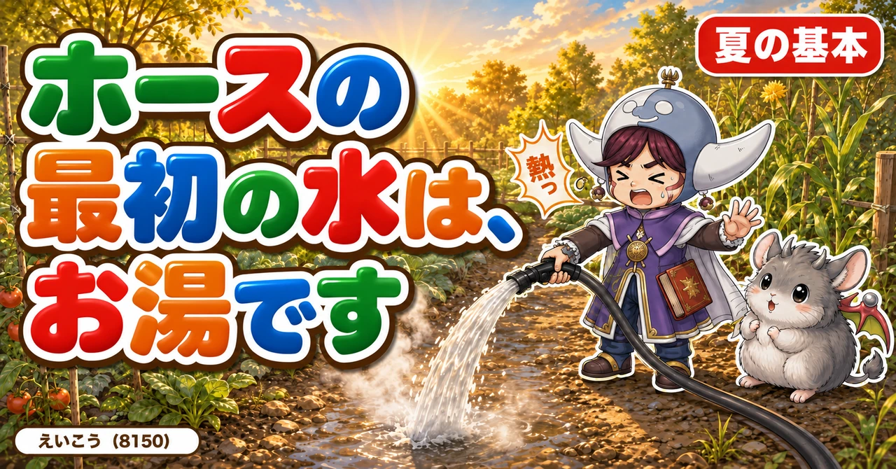
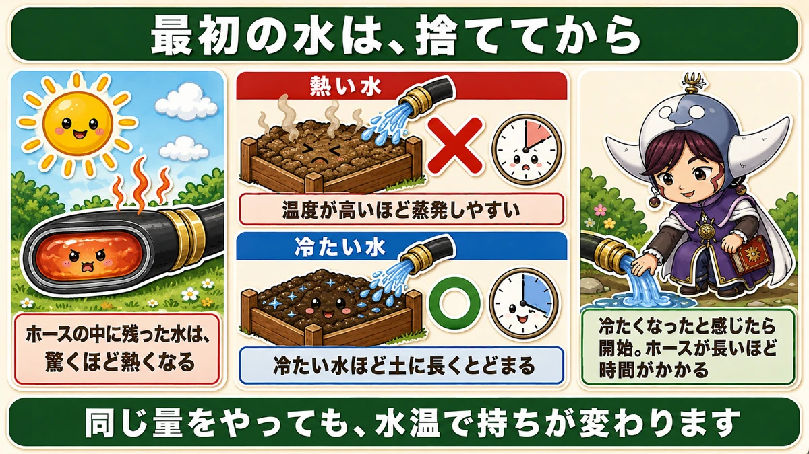
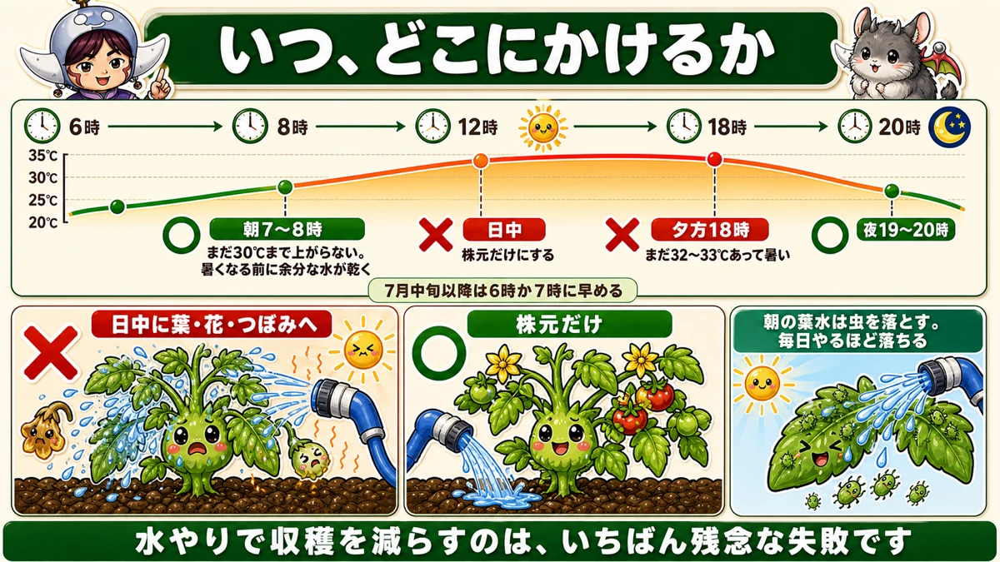
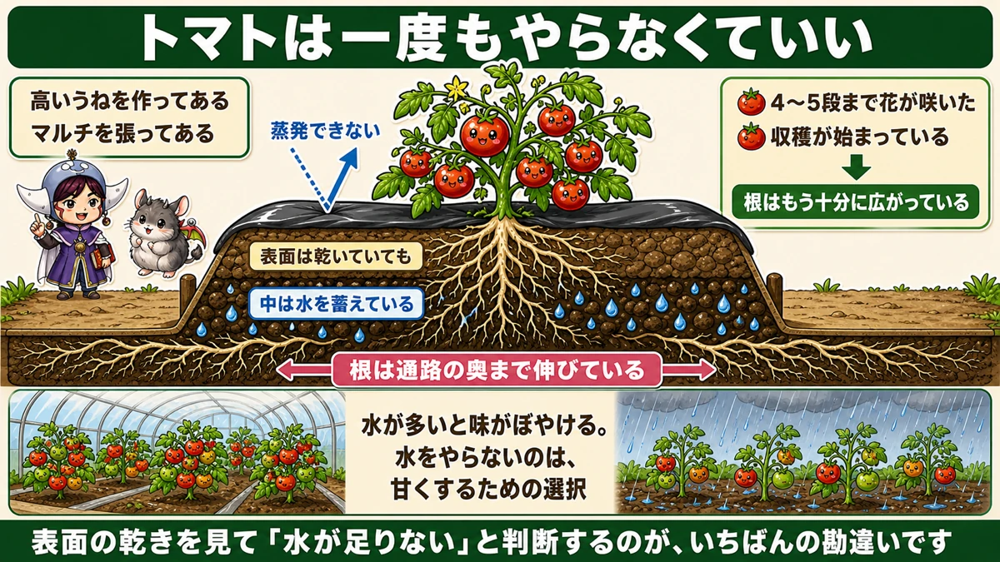
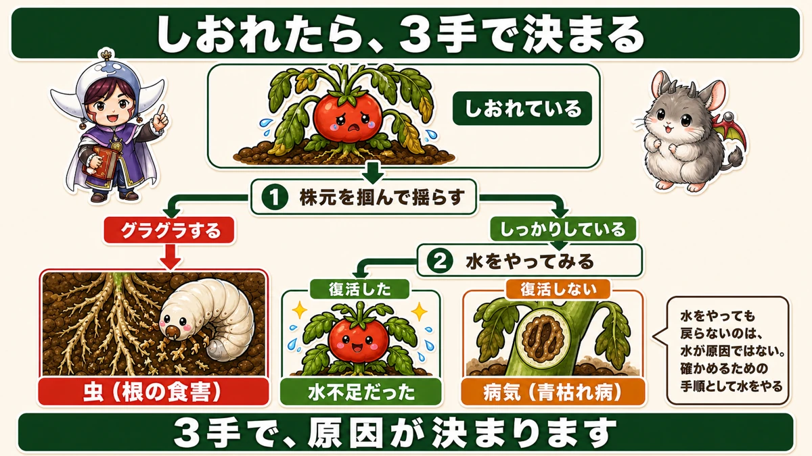

夏の水やり判断帳｜畑とプランター、乾燥・過湿の見分け方

どうも、8150（えいこう）です🌱 家庭菜園歴8年、理科の教員免許を持っていて、有機・無農薬で野菜を育てています。
📖 この記事の目次
この記事で分かること
- 水を足す前に、『地植えか鉢か』『苗か成株か』『雨のあとか日照り続きか』を分けます。
- 畑の表面が白っぽくても、少し深い土には湿りが残っている場合があります。
- 必要な日は根のある範囲へ水を届け、湿っている場所への追加は控えます。
- 朝夕の時刻は目安です。ホースから出る水と、地面の熱さを実際に確かめます。
- しおれは水不足だけのサインではありません。過湿、高温、根の不調も候補として残します。
- 留守前には給水の動作と水の減り方を確認。『設置できた』と『留守中も足りる』を分けて考えます。
夏の菜園で迷うのは、晴れた日の水やりですよね。葉が下を向いていると、なんか見ているほうまで焦ってきます。「もっと水を入れたら元気になるかな」と思うのも自然です。でも、土の中にすでに水があれば、追加することが助けになるとは限りません。
8150（えいこう）です🌱 このページでは、水やりを『毎日やる仕事』ではなく、『必要かどうかを見て決める仕事』として整理します。家庭菜園歴8年、理科を教えている立場から、数字を覚えるより実物を見る流れを大事にしたいと思っています。
先に見てほしいのは、野菜の名前より栽培場所です。畑のトマトと、ベランダのトマトは同じ野菜でも水を探せる範囲が違います。そこへ、植えた直後か、収穫が始まった株かという違いも加わります。『トマトだから不要』と一言で片づけると、大事な前提が抜けるんですよね。
これから水やりへ行くなら『早見』と『作業の手順』へ。すでに調子が悪いなら『失敗の見分け方』へ進んでください。説明が食い違って戸惑ったときは、『説明が分かれていること』で条件を整理できます。全部を一度に読まなくても大丈夫です☺️
早見：夏の水やり（ひと目で分かる数字）
時計・深さ・量の目安
- 朝の時間：8時ごろまでという説明と、盛夏には6〜7時へ前倒しする説明があります。8時なら全国どこでも涼しい、という約束ではありません。
- 夕方の時間：16時以降という目安と、18時でも32〜33℃ほどある地域では19〜20時にする目安があります。幅を平均せず、その日の暑さで考えます。
- ホースの水出し：約20秒の実演があります。ただし、ホースの長さや置き場所が違えば必要時間も変わります。終了の判断は秒数より実際の水温です。
- 畑の土を確かめる深さ：約10cm下を見る例と、約20cmまで調べる例があります。根を探すために株のすぐ脇を深く掘る指示ではありません。
- 根へ水を届ける深さ：約20cmまで染み込ませたいという説明があります。土質によって浸透が違うので、一定量を入れれば必ず届く意味にはしません。
- ナス・きゅうりの一回量：約6L／株という栽培例があります。一方、3Lと6Lじょうろの3分の1という説明が同じ記録にあり、量が一致しない例もあります。こちらを都合よく2Lや3Lへ決め直さず、一律量の根拠には使いません。
- きゅうりの頻度：週1回程度、3日に1回程度、毎日の管理、朝夕の管理、極端な乾燥時だけという複数の説明があります。土と雨、生育、収穫の目的をそろえて比較します。
- 里芋の頻度：2日に1回という目安と、週1回以下で足りるという目安があります。後者を雨のない全地域へ広げないことが大切です。
- ナスの頻度：2〜3日に1回という説明があります。収穫後半に補水を重視する説明もあり、雨が降って土が湿っている日まで機械的に足す意味ではありません。
- 鉢の頻度：夏はこまめな確認が必要です。容器の土量と乾き方が違うので、全国共通の『一日何回』はこの材料から決められません。
- 発芽前の夏まきニンジン：まいた場所の乾燥を防ぐ管理が必要です。成株の畑で水を減らす目安とは別枠で考えます。
- 留守の日数：何Lあれば何日もつ、という保証表はありません。設備の実際の消費量と、土の乾き方を確認して予定を組みます。
数字が並ぶと、どれか一つに決めたくなりますよね。でも、ここでは『正解の数字一覧』ではなく、『どこに違いがあるかの一覧』として使ってください。量を決めるときには、一株なのか、一つの通路なのかという単位も大切です。通路へ入れたバケツ一杯と、一株へ入れたじょうろ一杯を、そのまま比べることはできません。
野菜と生育段階で見る早見
- 根が十分広がった畑のトマト：水をかなり控える管理があります。ただし、高温や乾燥が続くときの補水を重視する説明もあります。苗と鉢は別です。
- 収穫中のナス：生き残るだけでなく、実を育て続けるための水を考えます。葉への散水だけで、根に必要な水を届けたことにはしません。
- きゅうり：乾かしすぎも、湿らせ続けることも避けたい野菜です。曲がった実が出たときも、水だけのせいと決めません。
- ピーマン：水やりが少なくてよいという分類と、実が育つ時期には必要量が多いという説明があります。大きくなった株と、実を増やしている株の条件を見ます。
- 里芋：乾燥への注意が必要ですが、水を好むことと根腐れするほど湿らせることは別です。覆いと雨の条件も確認します。
- 枝豆・トウモロコシ：開花後の水分を重視する説明があります。冬越しの豆の種まきで水を控える話を、夏の開花後へ持ち込まないようにします。
- 植え付け直後の苗：広い畑に植えたからといって、すぐ遠くの水を使えるとは限りません。活着までの管理を成株から切り分けます。
- プランター全般：根が容器の外へ広がれず、蓄えられる水の量も限られます。畑で水を減らせた例をそのまま当てはめません。
この早見を使う前の確認
- 育てている場所が畑か鉢かを決めた
- 植え付け直後・収穫中・発芽前を分けた
- 最近の雨と、その後の晴天を思い出した
- 土の表面と中の状態を別々に見ることにした
- 水量だけでなく、注ぐ位置と浸透も確かめることにした
水やりの記事なので、まき時、株間、元肥量を無理に一つの数字へまとめません。その数字は野菜ごとの栽培計画で確認するものです。ここでは、その株の『今日の水が必要か』を調べるための目安を集めています。
作業の手順（時期の順）
1．夏の前に、水の入口と出口を調べる
- 水を使える場所と、ホースが届く範囲を確認します。
- うねの間を見て、雨のあとに水がたまる場所を探します。
- 地表を覆っている場所と、むき出しの通路を区別します。
- 畑へ来られる頻度に合わせて、確認する順番を決めます。
水を入れる段取りだけでなく、余った水がどこへ逃げるかも見ておきます。乾燥する夏でも、その前に梅雨やまとまった雨があるんですよね。通路を使って補水する方法と、通路に雨水をためたままにすることは同じではありません。
雨のあとにずっとぬかるむ場所なら、次の水やりを考える前に排水の状態を確認します。反対に、通路が乾きやすい畑なら、根が広がる場所の水分をどう保つかが課題です。『通路へ水を入れる』という一文だけでは、その二つを区別できません。
まだ植えていない場所は、水が使える日に作業を合わせる選択もあります。夏まきニンジンには雨のあとを利用する考え方がありますが、雨が降った事実だけで発芽まで安心とせず、その後の乾きを見られる日程にしてください。
2．植え付け直後は、苗の周りを別に見る
- その株を植えた日を確認します。
- 苗の周囲に水が入っているか、雨で湿ったかを見ます。
- 乾いている場合は、苗の根が使える範囲への補水を考えます。
- 新しく育つ様子を見ながら、成株の管理へ切り替えます。
活着とは、植えた苗がその場所で根を伸ばし、育ち始めることです。言葉だけだとちょっと難しいですが、『引っ越し先で生活を始められたか』くらいに考えると分かりやすいかなと思います。
広い畑には水のある場所があっても、植えたばかりの苗がそこまで根を伸ばしているとは限りません。水を控える栽培の説明にも、植え付け後から活着までの例外があります。雨で必要な湿りが得られた場合と、晴れ続きで水が入らない場合も分けて考えます。
『植えたあとなら、毎日追加すればよい』とも決めません。すでに湿っている苗の周りへ、心配だからと水を重ねると、成株とは違う理由で根の環境を悪くすることがあります。遠くの土が乾いていることと、苗の周りが乾いていることを区別してください。
3．収穫が始まったら、株元以外の土も確かめる
- 地表の乾きだけで作業を決めず、うねの端や通路も見ます。
- 根を傷めない位置で、少し下の土の色や湿りを確認します。
- 同じ土の乾いた部分と湿った部分を、触った感覚で比べます。
- 確認した場所は埋め戻し、次に来たときにも変化を見ます。
大きく育った株は、根も株元だけに集まっているわけではありません。根が通路側まで広がる説明があるため、いつも茎のすぐ脇へ水を入れる方法だけが候補になるとは限らないんですよね。
土を見る実演には、10cm程度下を確かめるものと、20cmほど掘るものがあります。数字を守るために根を切ってしまうのは本末転倒です。まず地表と少し下で湿りが違うかを調べ、株のすぐ横を大きく掘り返すことは避けます。
土を軽く握る方法もあります。乾いて崩れる土と、湿ってまとまりやすい土を比較するためです。ただし、違う土質の畑同士で同じ固まり方になるとは限りません。自分の畑の土が、乾いたときと湿ったときにどう違うかを見る観察として使います。
4．その日の水やりを、必要な株へ絞る
- 深い土にも湿りがあり、株の状態が安定している場所を分けます。
- 土の乾燥が進んでいる場所と、鉢・苗を別に確認します。
- 実を育てているナスや、水切れが気になるきゅうりを見ます。
- 必要な場所へ水を入れ、すべての株へ同じ回数で配らないようにします。
同じ畑でも、全員一斉の水やりにしなくて大丈夫です。雨を受けやすい位置、地表の覆いがある位置、植えたばかりの位置では状態が違います。ホースを持つとつい全部へ配りたくなりますが、先に観察したほうが作業の理由がはっきりします。
トマトへ水を減らす説明も、根が広がり、土の中に水があることを前提にしています。四〜五段の開花や収穫開始を目安とする話があっても、その段数になればどんな日照りにも対応できる、という保証ではありません。株の大きさは、土を調べることの代わりにはしないでください。
ナスでは、枯れないことと、収穫を続けることを分けます。株が生きていても、水不足が実の育ちや収量に関わるという説明があります。水を減らすほど上手な栽培、という競争ではないんですよね。
5．水を出す前に、ホースの残り水を確認する
- ホースを持ち、日に当たって熱くなっていないか見ます。
- 最初の水を、野菜へ直接かけずに出します。
- 熱い水が出ている間は、水やりを始めません。
- 出てくる水の温度が変わったことを確かめてから使います。

蛇口につながっているから、出てくるのはいつも同じ温度の水。そう思いやすいところですが、ホースの中に残った水は別です。日中に温まったままなら、最初に出る水も温かくなっています。
約20秒水を出した実演がありますが、長さや残った水の量が違えば、必要な時間も変わります。20秒を計ったから安心、ではなく、流れてくる水を実際に確認するのが目的です。朝の作業でも、暑い日には確認を省かないようにします。
水温と水量は別の確認項目です。適量を使っていても熱い水なら問題があり、冷たい水でも湿った土へ足しすぎれば過湿になります。一つを確認したら全部大丈夫、にならないようにしてください。
6．時刻より、いまの暑さを見て作業する
- できるだけ涼しい時間に、水が必要かを確かめます。
- 朝の気温上昇が早くなったら、作業も早めます。
- 夕方は、日が傾いたことだけで涼しいと判断しません。
- 高温時しか来られない場合は、葉や花へ広くかける方法を避け、水温と注ぐ場所を慎重に確認します。

夕方の目安には16時以降という説明と、19〜20時にする説明があります。大きな差に見えますよね。ここを『17〜18時がちょうど中間』とまとめると、まだ暑い地域での注意が消えてしまいます。
昼の対応も一つにはまとまりません。葉や花への水を避けて株元に入れる説明と、熱くなったうねの中を避けて通路側へ届ける説明があります。どちらも、昼ならいつでも好きな場所へかけてよいという話ではありません。
時計は畑へ行く段取りに使い、実際に水をかける判断は現場で行う。この二段階にすると分かりやすいかなと思います。毎年の同じ日付でも暑さは同じではないので、7月中旬という区切りも作業を見直す目安として使ってください。
7．水が必要なら、根の広がる範囲へ届ける
- 株元がすでに湿っていないか確認します。
- 成株なら、うねの端や通路側にも根があることを考えます。
- 水の入り方を見ながら、必要な範囲へ注ぎます。
- 表面だけをぬらして終わらず、土に浸透する様子を見ます。
- 水が引くのを待って続ける場合と、毎日少量ずつ追加する管理を区別します。
マルチの植え穴は、水を入れやすい場所です。でも、入れやすいことと、必要な根へ届きやすいことは別なんですよね。株元だけがいつも湿り、その外に伸びた根の周りが乾いていれば、作業の位置を見直す余地があります。
通路へまとめて水を入れる説明は、すでに広がった根へ届ける考え方です。植え付け直後の苗や、小さな鉢へそのまま置き換えません。通路へ入れても、排水が悪く水が長くたまる場所なら、同じ方法を続けないことが大切です。
土に入るのを待ちながら一回の水やりを行うのは、『ちょこちょこ水を足す』こととは違います。前者は水を深く届けるための待ち時間、後者は毎回表面だけを湿らせる習慣の話です。言葉が似ていても、目的が違います。
8．地表の覆いは、保湿と補水を一緒に考える
- 土がむき出しになっている範囲を見ます。
- 覆いがある場所の中も、湿りが残っているか調べます。
- 補水が必要なときは、水が土へ入る経路を確認します。
- 覆っているから不要、裸だから必須と決めず、実物を見ます。

この図の『要らない』は、根が育ち、土に水分が残る畑で、水やりを減らせる考え方として見てください。鉢や、植えたばかりの苗、雨のない期間が続くすべての畑へ広げる意味ではありません。
地表を覆うことは、水が失われる速さを抑える助けになります。一方、上からかけた水が覆いの上を流れるだけなら、土へ入った量は見た目より少ないかもしれません。『ぬれているのは何か』を一つずつ見ます。
資材の厚さや重量には、この材料から決められる全国共通の数字がありません。具体的な資材選びを無理に足すより、ここでは既存の覆いと土の状態を確認することに集中します。
9．プランターは、確認を独立した仕事にする
- 畑を見終わっていても、鉢は別に確認します。
- 土の表面を見て、容器内の湿りも意識します。
- 容器の底から余分な水が出られる状態かを見ます。
- 水を必要とする乾き方なら補い、湿りが続くなら追加を急ぎません。
鉢は、土の量が限られています。根が伸びたいと思っても、容器の外の土へ行けません。大きくなった畑の株が、株元以外から水を取り込める話とは前提が違います。
夏は乾燥をこまめに見たいですが、『夏だから過湿は起きない』とは考えません。土が乾いているか、水が抜けるかを確認することは、季節が変わっても必要です。容器の大きさ、置き場所、株の育ち方が違えば、同じ日に並べた鉢でも乾き方は変わります。
畑と鉢を同じ回数で回すと、どちらかに無理が出ることがあります。朝の観察で両方を見ても、与えるかどうかはそれぞれで決めて大丈夫です。
10．夏まきは、発芽する場所の乾きを追う
- 種まき前の成株向けの管理をいったん切り離します。
- まいた場所が乾いていないか確認します。
- 翌朝までの乾燥が心配な条件なら、夕方の補水も検討します。
- 発芽後は、葉の状態と雨を見て管理を見直します。
夏まきニンジンには、夕方に水を入れ、翌朝まで乾かさないことを重視する説明があります。収穫中のナスで、朝の管理を勧める説明とは目的が違います。根が広がった株の水を減らす話とも、そのまま比較できません。
発芽前は、遠くの湿った土へ根を伸ばして水を探す段階ではありません。だから、畑に深い水があることだけで、まいた場所も大丈夫とは言えないんですよね。種をまいた位置の状態を見ることが大切です。
11．留守の準備は、出発前の動作確認まで行う
- 留守の日数と、確認を頼める人の有無を整理します。
- 畑の深い土と、鉢の乾き方を別々に確認します。
- 給水設備がある場合は、実際に水が出ることを見ます。
- 一回の運転や一定期間で減った水量を記録します。
- タンクに水が残る見込みと、土へ十分届くかを別に確かめます。
自動で水が出るのは助かります。でも、取り付けた瞬間に留守の心配が全部なくなるわけではありません。設定時間と実際の水量が想像と違う例もあります。少量のつもりでも水が速く減れば、途中でタンクが空になる可能性があります。
逆にタンクに水がたくさん残っていても、株の必要な場所へ届いていなければ安心できません。『タンクの残量』『吐出口から出る水』『土の湿り』は、違う確認です。ここを分けておくと、どこで問題が起きたかも調べやすくなります。
留守前だけ、いつもの何倍もの水を入れる方法にも無理があります。根の周りに水がたまる状態を作って、留守の全日程を埋め合わせようとしないでください。必要な場所へ届ける準備と、確認できない期間の備えを分けて考えます。
失敗の見分け方（症状→原因→やること）
この章は、病名を確定する診断表ではありません。水やりを続けるべきか、いったん止めて別の条件を調べるべきかを考えるための整理です。葉の見た目一つだけで、原因が一つに決まるとは考えないようにします。
地表は乾いているのに、毎日足しても元気がない
- 症状：表面が乾くたびに補水しているが、株の勢いが戻りません。
- 考えられる原因：土の中は湿ったままなのに、追加している可能性があります。根の不調や、別の生育条件も候補です。
- やること：水の量を増やす前に、少し下の土と排水を確認します。中まで湿っているなら、乾燥を原因と決めて追加しません。
表面は空気に触れ、日差しも受けます。そこが乾いたことと、地下全体が乾いたことは同じではありません。見えている部分だけで毎回水を足すと、地下の状態が分からないまま作業が積み重なります。
『毎日世話をしているのに』というときこそ、回数以外を見たいです。世話の少なさではなく、世話をする場所やタイミングが合っていない場合もあるんですよね。
表面だけ湿って、深い場所は乾いている
- 症状：水やり直後には色が変わるのに、少し下は乾いたままです。
- 考えられる原因：一回の水が表層をぬらすだけで、根のある場所へ十分入っていない可能性があります。
- やること：必要な日に、水の浸透を見ながら根の広がる範囲へ届けます。回数だけを増やす前に、一回の届き方を見直します。
この場合の『もっと』は、翌日も同じように表面へ散水することではありません。どこまで水が入ったか、途中でどこへ流れたかを確認することです。覆いの上を水が走っていれば、土の色を見られる場所で確かめます。
土中が乾いた株と、すでに湿っている株では、必要な対応が反対になります。葉が元気でないという共通点だけで、同じ水量を配らないようにしてください。
葉が巻く、下を向く、しおれが見える
- 症状：葉の形や張りがいつもと違います。
- 考えられる原因：水不足の候補がありますが、高温や根の不調も考えられます。厚みや色の違う葉では、別の生育条件も残します。
- やること：どの時間帯に起こるか、土が乾いているかを記録します。水不足が疑われる場合の補水後も、状態の変化を確認します。

この図は原因を考える入口です。水を入れた後の変化は参考になりますが、戻らなかったという結果だけで病名を決めるものではありません。株を強く揺すって根を傷めるような確認も避けます。
土が湿っているしおれに対して、『反応が出るまで何度も水を足す』のは控えたいです。足した量、土の湿り、気温の変化が混ざると、何に反応したかも分からなくなります。反応を見ることと、無制限に追加することは分けます。
補水しても、しおれが続く
- 症状：水を入れても葉の状態が戻りません。
- 考えられる原因：病気のほか、根の傷み、過湿、高温なども候補として残ります。
- やること：追加の水をいったん急がず、土に水が入ったか、すでに湿りすぎていないかを確認します。続く不調は、写真と栽培条件をそろえて相談します。
水を与えて戻るかを見る説明と、ハウスの高温を心配する説明が材料にあります。別々の観察材料を、こちらで新しい確定診断へ組み替えないことが大切です。
相談するときには、野菜名、畑か鉢か、植えた時期、雨の状況、しおれの起きる時間を添えます。『水をやったのに』だけより、現場が伝わりやすくなります。水を入れる前後の写真も、変化を説明する助けになります。
雨のあと、根元の湿りがいつまでも続く
- 症状：通路に水が残り、株元の土も乾きません。
- 考えられる原因：排水が悪い場所に、雨や水やりが重なった可能性があります。
- やること：予定していた補水をそのまま実行せず、水の逃げ道と湿っている範囲を見ます。根腐れが疑われる状態なら、水量を増やす方向へ進めません。
水が抜けない場所と、水をためる必要のある乾いた場所は区別します。通路への水やりが紹介されていても、通路を常時水たまりにしてよい意味ではありません。
『昨日は暑かった』という情報だけでは、今日の水の要否は決まりません。その間に降った雨と、まだ残っている水を先に見ると、やりすぎを避けやすくなります。
きゅうりが曲がり、実の育ちがそろわない
- 症状：収穫する実の形や育ち方に変化が出ます。
- 考えられる原因：水切れが関わる可能性があります。実の形だけで水不足と決めることはできません。
- やること：根の周囲の乾き、最近の補水と雨を見直します。まっすぐな実と多収を目指す管理では、頻繁な水の確認を重視する説明があります。
水やりを少なくして育てる話と、収穫量・果形を整えるために水を重視する話があります。目標が違うため、一つの頻度へまとめると意図が消えてしまいます。水切れを起こさないという注意は、水を減らす説明にも含まれています。
曲がった実を見て、これから毎日大量に足すと決める前に、土を見ましょう。すでに湿っているなら、同じ対応を続ける根拠にはなりません。
ナスの実に艶がなく、株の勢いも弱い
- 症状：実の見た目と株全体の育ちが気になります。
- 考えられる原因：乾燥や高温、日照、生育に必要な栄養など、複数の条件が関わる場合があります。
- やること：実だけで判断せず、葉や花、土の水分も観察します。水不足が疑われる場合は補水を見直し、それだけで説明できない不調を残します。
ナスでは、水を減らした結果、収量や実の大きさが落ちるという注意があります。だからといって、艶がない実が一つあれば必ず水不足、とはしません。観察する場所が増えれば、同じ結論を急がずに済みます。
弱っている株に、水と肥料を同時に大量追加すると、何が必要だったか分かりにくくなります。このページでは具体的な追肥の処方を足さず、水の過不足を確認するところまでにします。
トマトの実の底が傷む、黒くなる
- 症状：果実の下側に傷みが見えます。
- 考えられる原因：材料では、尻腐れとカルシウムの供給、水不足、高温・乾燥との関係が説明されています。見た目だけで原因を確定しません。
- やること：極端な水切れがなかったか確認します。土の湿りと根の状態を見て、水を絞ればよいという管理を見直します。
水を入れるだけでは防ぎきれない場合があるという説明もあります。『黒い部分が出た→特定の資材を入れる』という短絡にはせず、まず栽培条件を整理します。商品名や希釈量の推測は加えません。
甘さを目指す水の制限と、生育を損なう水不足は別です。味を濃くしたいという目的があっても、傷みが出ている株をさらに乾かす理由にはしないでください。
留守用の給水設備はあるのに、土が乾く
- 症状：装置を動かしたつもりでも、必要な場所に湿りがありません。
- 考えられる原因：水が出ていない、注ぐ位置が合っていない、水量が足りない、タンクが先に空になるなどが候補です。
- やること：作動の表示だけで済ませず、出口の水と土への到達を見ます。タンクの減りも記録し、予定より早くなくならないか確認します。
設備があることと、株が水を使えることの間には、いくつか確認する場所があります。まとめて『装置が悪い』と考えるより、動作、量、位置を順に見ると、相談するときにも伝えやすいです。
説明が分かれていること
同じ野菜の話でも、雨、土、生育段階、収穫の目的が違います。違う説明を見つけたときは、まず前提を確認します。ただし、前提を並べれば全部の差が解消するとは限りません。材料の中で一致していない数字や見解は、そのまま残します。
朝夕どちらでもよいか、朝を優先するか
- Aという説明：涼しい朝でも夕方でもよく、地域の暑さに合わせて時刻を変えます。
- Bという説明：収穫中のナスなどでは、夕方や夜の過湿を気にして朝を選びます。夏まきニンジンでは、発芽までの乾燥を防ぐため夕方を選ぶ説明があります。
- どう考えればよいか：根が広がった成株への補水と、種まき位置を乾かさない管理を分けます。野菜と段階を確認してから、時間帯を考えてください。
『朝が正しい』『夕方が正しい』を先に決めると、その株で何を防ぎたいのかが抜けます。日中の暑さを避けたいのか、翌朝まで種まき場所に湿りを残したいのか。目的を言葉にすると、説明の違いが読みやすくなります。
夕方は16時からか、19〜20時か
- Aという説明：きゅうりの管理で、16時以降を夕方の目安にします。
- Bという説明：18時でも32〜33℃ほどある地域では、19〜20時に行う目安があります。
- どう考えればよいか：二つの時刻は違う条件の説明です。間を取って一つにせず、実際の気温、地面、水の熱さを見ます。
朝の8時までという目安も、夏が進めば6〜7時へ早める説明があります。『夕方』も『朝』も、時計で区切るだけでは同じ環境にならないんですよね。数字は予定を立てる手がかりに使い、現場の確認を残します。
株元へ入れるか、通路側へ入れるか
- Aという説明：成株の根が広がっているため、株元の植え穴への追加を控え、通路側へ水を届けます。
- Bという説明：葉へかけるより株元へ入れる方法や、里芋・ナスで株元と通路を組み合わせる方法があります。春の植え付け初期には植え穴から入れる説明もあります。
- どう考えればよいか：『葉か土か』という比較と、『土のどの位置か』という比較を分けます。株元の土がすでに湿っているか、生育段階はどうかを確認します。
根が広がる前の小苗の方法と、通路へ根が出た成株の方法は、そのまま交換できません。一方で、夏の成株でも株元と通路を使う説明があるので、『成株なら株元は禁止』と全部を統一することもしません。
水は何L、何日おきがよいか
- Aという説明：約6L／株を使い、深さ20cmへ水を届けたいという説明があります。
- Bという説明：別の記録では3Lと6Lじょうろの3分の1が同時に出てきており、量が一致しません。頻度も、きゅうりは週1回程度から毎日の管理まで幅があります。
- どう考えればよいか：一株量と通路への量を分け、量が矛盾する記録を勝手に補正しません。水を入れる必要と、土に届く量を現場で確認します。
里芋では2日に1回と週1回以下という異なる目安があります。少ないほうだけ選ぶと日照りへの注意が消え、多いほうだけ選ぶと雨の後の過湿への注意が消えます。頻度を平均するより、雨と土の状態を先に見るほうが使いやすいです。
高いうねは水を保つか、乾きやすいか
- Aという説明：根が広がったトマトで、高いうねと地表の覆いの内側にある水を利用できるとして、水を減らします。
- Bという説明：高いうねは低いうねより乾きやすく、水やりを増やす必要があるとします。
- どう考えればよいか：高さだけで保湿性を決めません。同じ土と同じ構造で比較した結果ではないため、実際のうねの中の湿りを調べます。
排水をよくしたい話と、水を残したい話は、どちらも菜園で必要です。『高くしたから水やり不要』も、『高いから毎日必要』も、土の確認なしには使えません。地表の覆いも、永久に水を保存する仕組みとして扱わないようにします。
トマトの水を減らすか、猛暑には補うか
- Aという説明：活着した露地のトマトで、根が広がり土中に湿りがある場合、水を大きく減らします。味を濃くする目的もあります。
- Bという説明：猛暑と乾燥が続けば補水し、生育不良や実の傷みを避けることを重視します。
- どう考えればよいか：『水を減らす』を『水不足になっても放置する』へ広げません。鉢、植え付け直後、収穫中の強い乾燥を別に見ます。
雨が入らない栽培で水を調整する話もありますが、雨が少なければ必ず甘い、という保証にはしません。収量や株の育ちも目標に入れ、甘さだけを理由に極端な乾燥を続けないことが大切です。
葉へ水をかけることは有効か、避けるべきか
- Aという説明：涼しい朝の葉への水で、アブラムシやハダニを落とすことを重視します。
- Bという説明：暑い時間に葉や花へ水をかける影響を心配し、土への補水を勧めます。葉の水滴を理由とする説明と、葉より花・つぼみ・実を心配する説明もあります。
- どう考えればよいか：虫を落とすための水と、根へ届ける水を分けます。この材料だけで水滴の光学的な説明の正否や、病気が起きないという保証を決めません。
葉をぬらした量が、そのまま土中に入った量になるわけではありません。虫対策の目的を果たしたように見えても、根の水不足は別に確認する必要があります。逆に、根へ補水したから虫が落ちたことにもなりません。
しおれが戻らないなら、病気と決めてよいか
- Aという説明：補水後に戻るかどうかで、水不足と病気を切り分けます。
- Bという説明：ハウス内の高温など、別の可能性も考えます。葉の色や厚みの違いも、水不足だけでは説明しない例があります。
- どう考えればよいか：反応は記録しますが、それだけで病名を確定しません。現物と条件がそろわなければ分からない部分を残します。
分からないままにするのは、観察をやめることではありません。原因が決まらないときに、水を追加することだけを繰り返さず、別の条件を見られるようにするためです。『まだ決められへんな』と一度置くことも、株のためになる場合があります。
よくある質問
夏は毎朝、水を入れればよいですか
毎朝見る習慣は役に立ちますが、毎朝必ず追加する習慣とは分けます。畑の中に湿りが残っていれば、表面が乾いても補水が必要とは限りません。鉢や小苗は、成株の畑と別に見てください。
昨日雨が降ったら、今日は何もしなくてよいですか
雨が土へどの程度入ったかを確認します。降ったという情報だけでは、鉢や覆いの内側が十分湿ったかは分かりません。湿りが残っている場所への追加と、雨が十分届かなかった場所への補水を分けます。
土の色だけで決められますか
色は手がかりですが、表面だけでは足りません。少し下の色と湿りを、同じ畑の土で比べます。違う土質の場所へ、同じ色や固まり方の基準をそのまま当てはめないようにします。
20秒流せば、ホースの水は安全ですか
実演の時間は目安です。ホースの長さや残り水の量で変わるので、出てくる水の温度を確認します。時間を計ることより、熱くなった水を野菜へかけないことが目的です。
午後しか畑へ行けない場合はどうしますか
まず、その日に補水が必要かを確認します。必要な場合も、熱いホースの水や、葉・花への広い散水を避け、土の熱さと水を入れる場所を見ます。通路側へ届ける説明がありますが、排水が悪い場所へ同じ方法を続けません。
マルチをしていれば、水やりは不要ですか
地表を覆うことは保湿に役立ちますが、中の土がいつまでも湿っている保証ではありません。根が育った畑と、植えた直後の苗では判断が違います。覆いの有無だけでなく、土中の状態を調べます。
トマトの鉢も、水を減らすほうがよいですか
地植えで根が広がった株の管理を、鉢へそのまま移しません。容器は土の量が限られ、外の水を根で探せません。乾きと水の抜け方をこまめに見て、極端な水切れを目標にしないでください。
葉へ水をかけたら、根の水やりは済みますか
同じ仕事とは考えません。葉への水は虫を落とす目的を含みますが、根のある深さへ水が届いたかは別に確認します。葉がぬれた見た目だけで、土中の補水を終えたことにはしません。
葉水をすれば、害虫も病気も防げますか
虫を落とす目的の説明はありますが、すべての虫や病気を防ぐ保証ではありません。濡らす時間帯や目的を分け、葉の状態を見続けます。朝ならどんな条件でも病気が起きない、という結論にはしません。
水を控えれば、トマトは必ず甘くなりますか
水の制限を味と結びつける考え方はありますが、必ず甘くなる保証ではありません。生育や収量、実の傷みも確認します。根が張っていない苗や、すでに不調のある株をさらに乾かす理由には使いません。
きゅうりは週1回と毎日、どちらにしますか
材料には両方の管理があります。雨と土の湿り、収穫や果形を重視する目的をそろえて考えます。水切れを避けたいからと、湿っている土へ毎日追加する方法に決めないでください。
水を入れたのに戻らない株は、抜くべきですか
戻らないという反応だけで、抜く判断まではできません。過湿、高温、根の傷みなども候補に残し、条件を整理して相談します。水の反応だけで病名を確定する方法として使わないようにします。
夏まきニンジンも、畑なら水を控えますか
発芽前は別です。まいた場所を乾かさないことが大切で、夕方の補水を重視する説明があります。根が広がった夏野菜の節水管理を、そのまま発芽前へ持ち込みません。
留守前に多めに入れれば、一週間もちますか
土と天候によって変わるため、一週間の保証はできません。水をためすぎる状態を作るより、土の湿りと必要な範囲への到達を確認します。確認を頼める人や、給水設備の動作も含めて備えます。
自動給水を取り付けたら、すぐ留守にできますか
設置と長期の給水確認は別です。出発前に作動させ、水の減り方、出口の水、土の湿りを見ます。予定の運転時間だけでは、留守中に使う総量は分かりません。
水やりの記録は、何を書けばよいですか
日付、雨の有無、土の湿り、補水した場所、葉の変化が分かれば使いやすいです。量を記録するなら、一株なのか通路なのかも添えます。細かい日記より、次の判断で比べられる記録を残してください。
学ぶ：土・根・葉をつなぐ水のしくみ🔬
地面の表と中は、同じ速さで乾かない
畑を見たとき、最初に目に入るのは地表です。白っぽく乾いて見えると、地下も全部同じ状態だと思いやすいですよね。でも、材料の土を調べる実演では、表面の下から湿った土が出ています。
ここで面白いのは、一枚の畑の見た目に、違う状態が重なっていることです。表面は乾き、下には湿りがある。地表を覆った内側と、むき出しの場所でも違う。『畑が乾いた』という一言を、場所と深さへ分けるだけで、水やりの判断が変わります。
水を入れたあとの見た目も同じです。地表がぬれたことと、根のいる場所まで届いたことは別。ぬれる面積ばかり広げても、深い場所へ十分入らなければ、狙った補水にならない場合があります。
根に必要なのは、水だけではない
材料では、湿りすぎる土で酸素が足りなくなり、根の働きが弱ることが繰り返し説明されています。水があるほど安心、とは考えられない理由です。
葉が元気でないと、水が少ないのかなと思います。でも、根の周りが過湿であれば、追加する水は同じ方向の問題を大きくする可能性があります。地上の姿が似ていても、土の中の状態が違えば、必要な行動が変わるんですよね。
『水を入れるか』を考える前に、『すでに水があるか』『水が抜けるか』を調べます。難しい用語を覚えるより、この二つの問いを持って畑を見るほうが、今日の作業へつながりやすいかなと思います。
根の広がりで、使える水の場所が変わる
植え付け直後の苗と、収穫が始まった株を分けるのは、使える土の範囲が違うからです。根が通路側まで広がった株なら、茎のすぐ下だけを水の場所として考えません。
一方、プランターには容器の境界があります。地植えの株が周辺の土にある水を利用できる話を、同じ大きさの鉢の株へ移すことはできません。地上の葉の大きさが似ていても、地下の条件は違います。
根を毎回掘り出して確認する必要はありません。植えた時期、株の育ち、周辺の湿りを見て、管理の前提を分けます。根の存在を意識するだけでも、いつも同じ植え穴へ注ぐ習慣を見直せます。
熱い残り水と、土の水不足は別の問題
日差しを受けるホースの中では、残った水が温まることがあります。水道の水を使っていても、蛇口から野菜へ届く途中の状態を確認する必要がある、ということです。
温かい水は蒸発しやすいという説明もありますが、この材料には、実際の畑で水温だけを変えて水持ちを比較した測定結果はありません。冷たくすれば、どんな土でも何倍も長持ちする、といった数字は付けません。
実践でまず押さえたいのは、熱くなった残り水をそのまま野菜へかけないこと。そのうえで、水量、注ぐ場所、土の湿りを確認します。水温を直す仕事と、水不足を補う仕事はつながっていますが、同じ確認ではありません。
葉の変化は、観察を始める合図
葉の巻き、垂れ、しおれは、株の状態がいつもと違うことを知らせます。ただ、その姿だけで地下や周囲の条件まで全部は分かりません。土の水分や高温など、別の情報も見たいところです。
水を入れて変化があった場合も、どの株へ、どんな条件で行ったかを残します。反応だけを病名へ置き換えず、栽培の観察として使うほうが、次の相談にも役立ちます。
理科って、名前を覚えてから見るものと思われがちですが、逆でも大丈夫です。今日は地表と少し下の土を比べる。次は、水を入れる前後の葉を見る。そんな小さな比較から、畑の見え方が変わっていくのが楽しいところです🔬
まとめ
夏の水やりで持ち帰ってほしいのは、『暑さに反応して足す前に、株が使える土の水を確かめる』という順番です。回数を減らすこと自体が目的ではありません。必要なときに届くようにし、すでに湿ったところへ重ねないための観察です。
これから畑やベランダへ行くみなさんは、次の順に確認してください。
- 畑か鉢か、植えた直後か成株か、発芽前かを分けます。
- 雨と晴天の続き方を思い出し、地表と中の湿りを見ます。
- 株の状態を見て、水が必要な場所を絞ります。
- ホースの残り水と、その時間の暑さを確かめます。
- 根のある範囲へ届け、補水した場所とその後の変化を残します。
説明が違うときは、どちらかを急いで捨てなくても大丈夫です。きゅうりの週1回と毎日の管理、里芋の2日に1回と週1回以下、夕方の16時と19〜20時には、それぞれの前提があります。その一方で、同じ記録の水量が一致しないものもあります。数字を平均したり、こちらで整えたりせず、使える条件を確認します。
留守前の確認は、出発する前に終えておきたい仕事です。
- 土に水が残っている場所と、乾きやすい鉢を分けた
- 給水設備を実際に動かし、出口から水が出るのを見た
- 水が必要な土へ届くことを確認した
- タンクの減り方を見て、日数の見込みを考えた
- 確認を頼める人と、伝える内容を整理した
しおれたときは、水を増やすだけで解決しようとせず、土の湿り、暑さ、根の不調を候補として残してください。補水後の反応は参考になりますが、それだけで病気の名前や株を抜く判断までは決まりません。
明日から全部変えなくても大丈夫です。まずはいつも水を入れている一株で、地表と少し下の湿りを比べてみてください。「上は乾いてるけど、中はまだあるんやな」と分かれば、その日の作業を選ぶ材料が一つ増えます。水やりの時間が、株の様子を知る時間にもなるといいかなと思います☺️
敷きわら
そもそも水をやらなくて済むようにするための道具です。土の表面から逃げる水を止めます。
![[商品価格に関しましては、リンクが作成された時点と現時点で情報が変更されている場合がございます。]](https://hbb.afl.rakuten.co.jp/hgb/56bc2fb2.ff40a6e6.56bc2fb3.618f6a70/?me_id=1257026&item_id=10000211&pc=https%3A%2F%2Fthumbnail.image.rakuten.co.jp%2F%400_mall%2Fsharuka%2Fcabinet%2F09042254%2Fimgrc0081094692.jpg%3F_ex%3D240x240&s=240x240&t=picttext "[商品価格に関しましては、リンクが作成された時点と現時点で情報が変更されている場合がございます。]")

じょうろ（8L）
プランターは話が別です。1日2回、鉢底から流れ出るまでやります。

穴あきマルチ
高いうねとマルチができていれば、トマトは一度も水をやらずに済みます。
![[商品価格に関しましては、リンクが作成された時点と現時点で情報が変更されている場合がございます。]](https://hbb.afl.rakuten.co.jp/hgb/55521906.a3595d78.55521907.92994d18/?me_id=1225177&item_id=10035007&pc=https%3A%2F%2Fthumbnail.image.rakuten.co.jp%2F%400_mall%2Fssn%2Fcabinet%2F02584092%2F07223762%2F4980356008386_1.jpg%3F_ex%3D240x240&s=240x240&t=picttext "[商品価格に関しましては、リンクが作成された時点と現時点で情報が変更されている場合がございます。]")
給水式プランター
夏のプランター栽培をいちばん楽にする方法です。底に水をためておけます。
![[商品価格に関しましては、リンクが作成された時点と現時点で情報が変更されている場合がございます。]](https://hbb.afl.rakuten.co.jp/hgb/56d750eb.4adaaa3a.56d750ec.674e1165/?me_id=1203559&item_id=10121847&pc=https%3A%2F%2Fthumbnail.image.rakuten.co.jp%2F%400_mall%2Fyminfo%2Fcabinet%2F00045323%2F811029.jpg%3F_ex%3D240x240&s=240x240&t=picttext "[商品価格に関しましては、リンクが作成された時点と現時点で情報が変更されている場合がございます。]")
あわせて読みたい